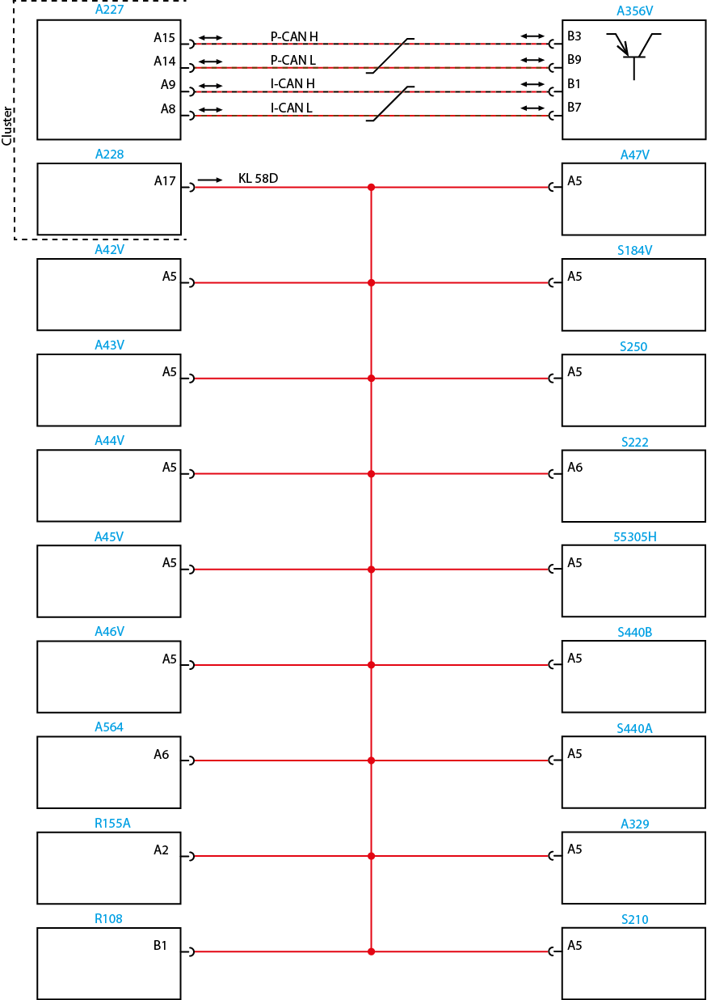

Nota:
Leia sempre as Recomendações para Diagnósticos.
Unidade Lógica (LU) - Worker Euro V
código1820-06
Descrição da falha
Saída da iluminação do painel de instrumentos em curto circuito.
Causa
Iluminação dos instrumentos do painel em curto circuito.
Efeito da falha
Afeta todos os componentes alimentado por este terminal.
Circuito

Legenda
| A356V | LU (Unidade Lógica) |
| A227 | Conector azul 32 vias - Painel de Instrumentos(X1) |
| A228 | Conector verde 32 vias - Painel de Instrumentos(X2) |
| A47V | Conector do interruptor(liga/desliga) do retardador |
| A42V | Conector (1) de espera para veículos equipados para coleta de lixo |
| S184V | Interruptor de acionamento do bloqueio do interdiferêncial |
| A43V | Conector (2) de espera para veículos equipados para coleta de lixo |
| S250 | Interruptor de levantamento do 3º eixo |
| A44V | Conector (3) de espera para veículos equipados para coleta de lixo |
| S222 | Interruptor do PTO |
| A45V | Conector (4) de espera para veículos equipados para coleta de lixo |
| 55305H | Interruptor menu |
| A46V | Conector (5) de espera para veículos equipados para coleta de lixo |
| S440B | Interruptor de redução da rotação do motor |
| A564 | Conector do rádio |
| S440A | Interruptor aumento da rotação do motor |
| R155A | Resistor terminal do VTTS |
| A329 | Interruptor de controle da velocidade de cruzeiro (on/off) |
| R108 | Acendedor de cigarros |
| S210 | Interruptor liga/desliga freio motor |
Avisos
|
Nota: Leia sempre as Recomendações para Diagnósticos.
|
Verifique visualmente o circuito de comando e o das lâmpadas quanto a fios derretidos, descascados. Verifique também as condições das
lâmpadas e soquetes.
Passos do diagnóstico de falhas
Etapa 01
Chave de ignição na posição desligada. Desconecte o conector X2 do Cluster e de todos os outros componentes. Meça a isolação entre o terminal A17 (X2) do Cluster para os demais terminais do conector. Está ok? |
 |
Etapa 02
Repare e/ou substitua o chicote elétrico. Apague o código de falhas. Refaça o teste.
|
 |
||
Etapa 03
Para fins de teste, substitua o Painel de Instrumentos (Cluster) por um em bom estado.
O sistema opera normalmente?
|
|
Etapa 04
Recoloque o Painel de Instrumentos ( Cluster) original. Vá para a etapa 06.
|
|
||
Etapa 05
Substitua o Painel de Instrumentos por um novo. Vá para a etapa 06.
|
||
 |
||
Etapa 06
Conecte todos os conectores. Chave de ignição na posição ligada. Apague os códigos de falha. Teste o sistema quanto ao funcionamento normal. A falha permanece ativa?
|
 |
Etapa 07
Vá para etapa 01 e refaça todos os testes.
|
 |
||
Etapa 08
Libere o veículo.
|
| Topo da Página |
|---|